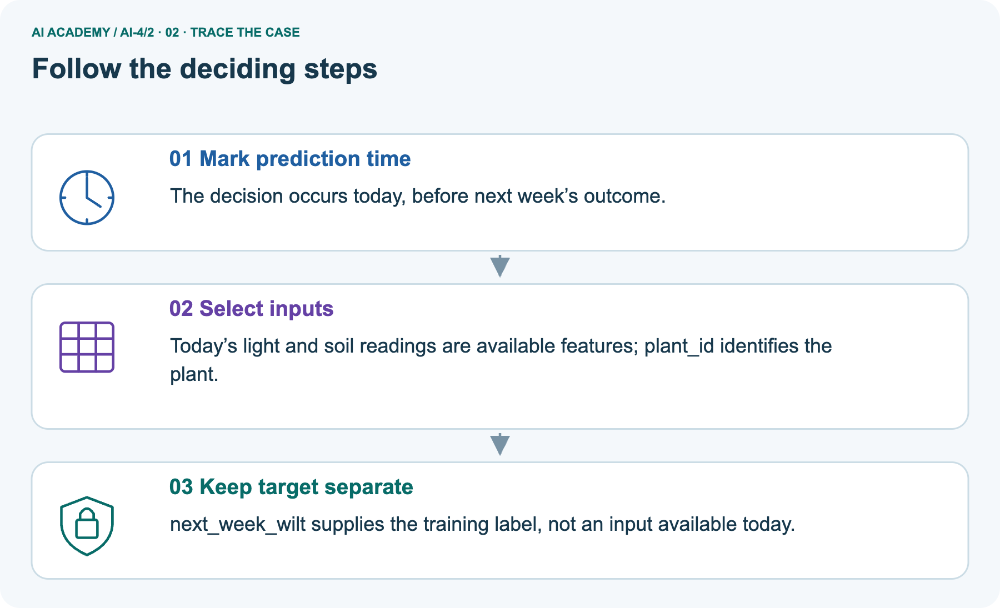
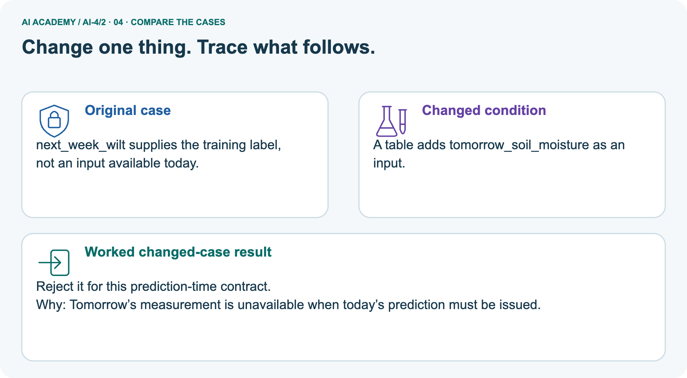
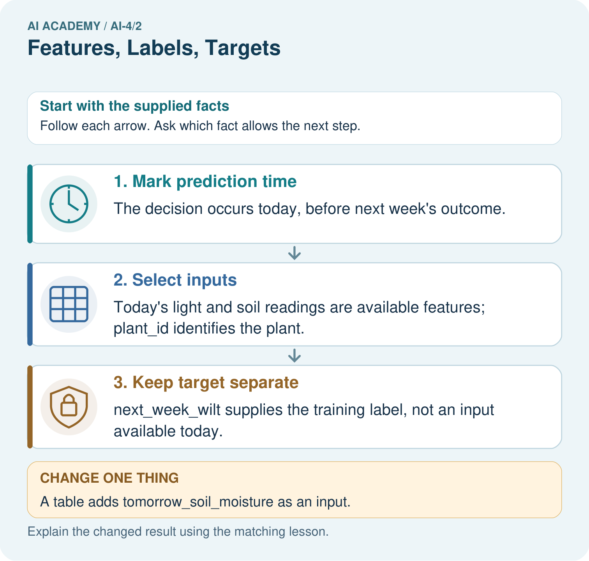
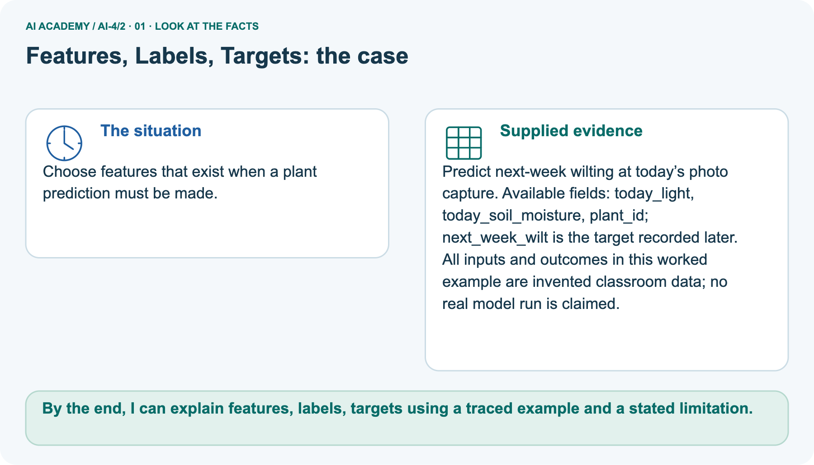
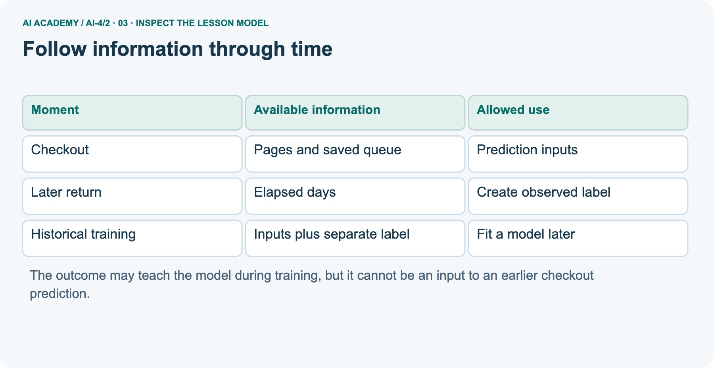
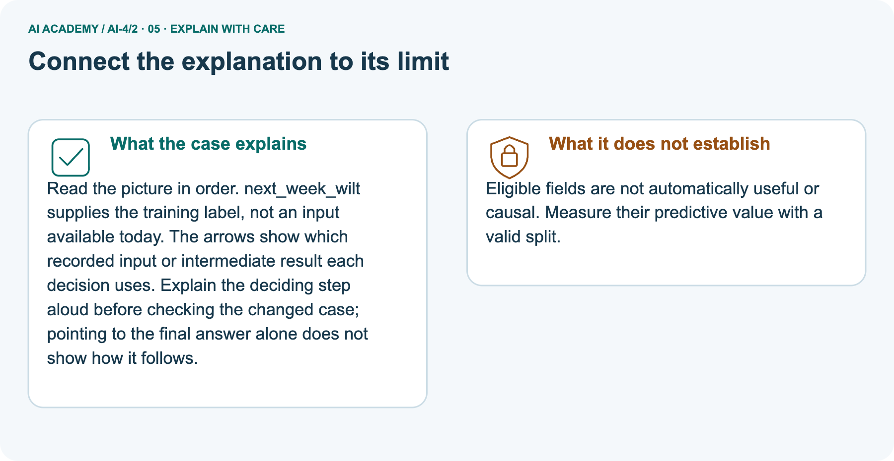

AI Academy · Level 4 · Grade 9 · Week 2 · Student lesson
Features, Labels, Targets
Learn to understand, design, build, test and explain AI systems responsibly.
Project: Responsible Plant Classifier
THE CONNECTED WEEK
Mark prediction time. Select available inputs. Keep outcomes separate.
Build a feature contract that works for both completed history and a genuinely new request.
Keep one habit: Library snapshot contract → plant-time trace → three complete tables → boundary/missing probes → independent dispatch audit.
Main lesson · Section 1
Could this input really exist when the prediction is needed?
Separate current features, tracking metadata and later observed outcomes.
Your learning goals
I can separate prediction inputs from observed targets.
I can check whether each feature exists at prediction time.
I can repair target leakage and state a feature contract.
Recall training/test roles
Close your notes first. A rough first answer helps us choose the right starting point; it is not a score for your ability.
Without opening the old lesson, explain one key idea from The ML Lifecycle. Give an example and a mistake that the idea helps you avoid.
After trying, check the relevant lesson or ask your teacher. Change the part of your explanation that the evidence shows was wrong.
Why must held out labels not be used to choose the threshold in Week 1?
Your end goal
By the end, I can explain features, labels, targets using a traced example and a stated limitation.
Earlier wording, alternatives and picture transcripts
Your learning target
Remember before reading
Features are the information available at prediction time; the target is the value the model should estimate; labels are observed target values in examples.

LEARNING TARGET A table has leaf length, edge type and verified species. A model predicts species using all three columns. Identify leakage and a legitimate input set.
Builder name and experiment date:
Readiness for the connected explanation
This week’s end goal
Main lesson · Section 2
Predict lateness at the instant of checkout
A historical export combines facts from different times.
Read the prediction-time problem
Week 1 separated training examples from testing examples. This week asks a different question: could each input actually be known when a prediction is needed? A historical table may contain facts added after the event.
A model trained with those facts can appear successful even though the inputs will be missing when it is used.
Use fictional library loans. At the instant a book is checked out, predict whether it will be returned more than 14 days later.
For completed historical loans, label 1 means days_to_return is greater than 14; label 0 means it is at most 14. Exactly 14 days is on time. Assume no changed due dates in this exercise.
All records and values are invented; do not collect classmates' borrowing histories.
Inspect every field’s meaning and time
| Field | When known | Role for this task |
|---|---|---|
| pages | At checkout | Candidate feature |
| queue_at_checkout | At checkout | Candidate feature |
| days_to_return | After return | Creates the label only |
| returned_late | After return | Label to predict |
| loan_id | At checkout | Tracking metadata |
Keep the original queue snapshot and arbitrary ID separate
queue_at_checkout is a saved count of waiting requests at that instant. It is not the queue when we later export the table. Candidate means available to consider, not proven useful or appropriate.
Exclude the arbitrary loan identifier from this exercise; keep it separately to track records.
Earlier wording, alternatives and picture transcripts
PICTURE ENTRY
Notice → Predict → Explain
Begin with visible evidence; do not explain more than the picture and information support.
MYSTERY The team must use features, labels, targets to solve a model-building problem. What information do they have? What important evidence is still missing?
Name three visible details without interpreting them.
Predict the data, model, or evaluation decision being made.
Identify one hidden assumption that could change the result.
State what evidence would confirm or reject your prediction.
My prediction and supporting evidence:
A closer explanation
Main lesson · Section 3
Use the same allowed fields for past and new records
A feature list should be reproducible without the future target.
Read the complete ordered feature contract
| Library feature contract | Declared rule |
|---|---|
| Prediction time | Checkout, before the return outcome |
| Feature order | pages then queue_at_checkout; page count then saved waiting-request count |
| Values | Positive integer pages; nonnegative integer queue, including 0 |
| Target | returned_late=1 when days_to_return>14, else 0 for completed loans; exactly 14 is on time |
| Tracking metadata | Arbitrary loan_id is excluded from predictors in this exercise |
| Excluded inputs | days_to_return, returned_late, fee_after_return and post-checkout renewals |
| Implementation limit | Feature selection code assumes valid fields and does not fit a model, validate arbitrary records or predict a new outcome |
Complete selection function and past/new examples
def features(row):
return [row["pages"], row["queue_at_checkout"]]
past = {"loan_id": "A", "pages": 120,
"queue_at_checkout": 2, "days_to_return": 18,
"returned_late": 1}
print(features(past))
print(past["returned_late"])
new = {"loan_id": "B", "pages": 80,
"queue_at_checkout": 0}
print(features(new))Trace inputs separately from the historical label
The feature order is always pages first, queue count second. The first output is [120, 2]; the separate label is 1 because this historical loan took 18 days.
The new loan produces [80, 0] even though its return outcome does not yet exist. The same feature function serves past and new records.
It deliberately selects allowed fields rather than copying every column except returned_late.
Trace recording time to later learning
Follow information through time
State validation and missing-field limits
This code prepares inputs; it does not fit a model or predict lateness. It assumes the two feature fields contain valid nonnegative integer values and pages is positive. A missing required field raises KeyError.
A real pipeline needs explicit validation and a missing-data policy.
Explain the deciding check
Point to the input, the deciding step and the result in this week’s visual. Explain the same step in ordinary words. A picture helps when you can say what each part represents.
Earlier wording, alternatives and picture transcripts
ML MECHANISM
Input → Model → Evidence
Trace the information, fitted behavior, and evaluation proof separately.


QUESTION Mark features and targets in three datasets and reject information unavailable at real prediction time.
MODEL IDEA Features are the information available at prediction time; the target is the value the model should estimate; labels are observed target values in examples.
PROOF NEEDED Use an unseen case, visible calculation, error analysis, and a stated limitation.
UNDER THE HOOD Plant row: leaf_width=6 cm, color_score=0.72, health=spotted. Features are leaf_width and color_score because they exist before prediction.
Draw a fresh data → model → prediction → evaluation trace:
A closer explanation
Connect the picture and the explanation
Main lesson · Section 4
Compare available features with outcome-revealing fields
An eligible input is a candidate to evaluate, not proof of usefulness or causality.
Four evaluation conditions

NORMAL Expected data and expected behavior.

Keep this boundary clear
BOUNDARY Value close to a threshold, ambiguous label, or uncertain prediction.

MISSING Necessary field, label, source, or measurement is unavailable.

SHIFTED New lighting, species, device, subgroup, or time condition.
Keep the claim bounded
RELEASE RULE Passing one case never proves generalization. Predefine expected behavior for all four categories.
Choose a revealing case
Which case most threatens today's claim, and why?
Predict the supplied changed case
Change: A table adds tomorrow_soil_moisture as an input.
Check after predicting
Prediction: Reject it for this prediction-time contract.
Reason: Tomorrow’s measurement is unavailable when today’s prediction must be issued.
Earlier wording, alternatives and picture transcripts
EVALUATION DESIGN
Four Tests, Four Kinds of Evidence
A system is not understood until it survives more than one comfortable example.
NORMAL Expected data and expected behavior.
BOUNDARY Value close to a threshold, ambiguous label, or uncertain prediction.
MISSING Necessary field, label, source, or measurement is unavailable.
SHIFTED New lighting, species, device, subgroup, or time condition.
Change one thing in the pictured case
Main lesson · Section 6
Trace the prediction-time line in a separate plant task
Field names alone are insufficient; the recorded meaning and timestamp decide availability.
Read the complete plant task and scope
Choose features that exist when a plant prediction must be made.
Predict next-week wilting at today’s photo capture. Available fields: today_light, today_soil_moisture, plant_id; next_week_wilt is the target recorded later.
All inputs and outcomes in this worked example are invented classroom data; no real model run is claimed.
Separate task contracts. Library lateness is predicted at checkout using pages/queue snapshot. The pictured plant task predicts next-week wilting at today’s capture using today_light and today_soil_moisture; plant_id is metadata and next_week_wilt is a later target. The added tomorrow_soil_moisture field is explicitly an observed reading captured tomorrow, not a forecast available today.
Reject it for today’s inputs even if a later export contains it. These are fictional records, not real plant or borrowing data.
Trace available inputs and later label



Read the picture one step at a time
Read the picture in order. next_week_wilt supplies the training label, not an input available today. The arrows show which recorded input or intermediate result each decision uses.
Explain the deciding step aloud before checking the changed case; pointing to the final answer alone does not show how it follows.
Predict adding tomorrow’s observed measurement
Change one thing: A table adds tomorrow_soil_moisture as an input. Predict the result before checking the explanation. What remains the same?
Check after predicting



State usefulness and causal limits
Eligible fields are not automatically useful or causal. Measure their predictive value with a valid split.
Read the labelled picture: Why can a historical table contain a field that is an invalid input? Point to the relevant step in the picture, then write the changed result and the rule or evidence that supports it.
Reference · Library timing questions
For every proposed input, ask what it means, when it was recorded, and whether the same definition can be supplied at checkout. A field in the historical export is not automatically available at prediction time.
An input calculated from later information is also unavailable, even if its name does not mention the outcome.
Earlier wording, alternatives and picture transcripts
WORKED EVIDENCE
Reason Step by Step
Predict first. Then check each step. A correct answer without visible evidence cannot be audited.

STEP 1 Plant row: leaf_width=6 cm, color_score=0.72, health=spotted.
STEP 2 Features are leaf_width and color_score because they exist before prediction.
STEP 3 Target is health; the stored value spotted is this row's label.
STEP 4 A treatment-result field recorded later is not a valid prediction-time feature.
CHECK Verify the denominator, unit, split, class definition, and data version before interpreting a score.
Recalculate, retrace, or restate the evidence independently:
A closer explanation
Learn from the worked case
Cover the result before checking it. Say what is given, choose the procedure, and follow one step at a time. Then uncover the result and explain your first mismatch. Ask why a step is allowed, not only what number it produces.
A pictorial worked case: Features, Labels, Targets
The facts we will use



Why this result follows
What this example does not establish
Main lesson · Section 7
Find the target information hidden in another column
Dropping the label column alone may leave the answer in the inputs.
Inspect the first-error table
| Evidence record | Expected | Actual | Likely cause / next test |
|---|---|---|---|
| normal case | passes | ||
| boundary case | defined behavior | ||
| missing case | safe fallback | ||
| shifted case | measured limit |
State the meaning/timestamp limitation
A feature contract records field names, meaning, units, order and availability time. Here the inputs are pages in pages, then queue_at_checkout in requests, both captured at checkout.
The target definition is returned more than 14 days later. Historical outcomes may be available for training, while new outcomes are unknown.
Never fill an unknown label with 0 merely because the book has not yet been returned.
Availability alone does not establish predictive value, fairness, a causal effect or a reason to use a model. This lesson audits inputs; later lessons evaluate models.
If an input cannot be collected at checkout, revise the design or specify a justified missing-input policy before use.
Challenge any-stored-column input selection
Diagnose one cause and name the cleanest next experiment:
CLAIM TO CHALLENGE Any column correlated with the answer is automatically a good feature.
Earlier wording, alternatives and picture transcripts
ERROR DETECTIVE
Compare → Diagnose → Repair
Do not patch the answer. Find the earliest unsupported assumption, data problem, or experiment error.

A closer explanation
Main lesson · Section 8
Practise the 14-versus-15-day label boundary with less help
The same checkout features can accompany different later outcomes.
Complete library W2
Use workbook W2 for the connected example “Features labels and prediction time”. First fill the input and rule boxes. Try the middle steps before asking for a hint. After a hint, try the next step yourself.
| Plan | Do | Check |
|---|---|---|
| What is given? Which rule or procedure applies? | Record each intermediate step. | Does the result follow? What remains unknown? |
Audit stored-column-as-feature reasoning
Use the worked case for Features labels and prediction time. Proposed explanation: “Every stored column is a feature”. Decide whether this explanation is supported.
Point to the step or supplied fact that decides; explain your repair if needed.
Answer on your own before discussion. If you are unsure, say which step you need help with.
Explain the pictured later field
Why can a historical table contain a field that is an invalid input? Point to the relevant step in the picture, then write the changed result and the rule or evidence that supports it.
Keep independent dispatch task separate
This is supported practice. Keep the separately named independent case for an attempt before feedback.
Trace direct and disguised target leakage
A learner removes returned_late but keeps days_to_return in the inputs. That still reveals the answer: compare days_to_return with 14. Remove both the target and the later return measurement from prediction inputs.
Also exclude a fee calculated after return or a renewal made after checkout. These are examples of target leakage, where unavailable outcome information enters the predictors.
Moving rows into a test set does not repair this problem if each test row still contains the later return measurement. Rebuild the inputs to match checkout time and repeat development and evaluation honestly.
If earlier test results influenced changes, obtain a new final evaluation set as well.
Reference · Reproduction-record fields
QUESTION + intended use + success threshold
DATA version + grouped split + leakage check
CODE/preprocessing + features + model + settings + seed
METRICS + positive class + units + denominators
PREDICTIONS + errors + subgroup slices + limitations
HUMAN reviewer + release, revise, limit, or stop decision
Write the minimum record needed to reproduce today's result:
Earlier wording, alternatives and picture transcripts
ML STUDIO
Specify Before You Run
A trustworthy result can be reproduced from the recorded data, code, settings, and evaluation rule.

Experiment record
A closer explanation
Practise with less help: Trace the feature contract
Explain your trace to a partner. Your partner points to one step to check. Swap roles on the next case. Each person writes their own explanation.
Check your reasoning
Explain the picture
Main lesson · Section 9
Sort three complete time-aware tables and four probes
Every field’s example value, recording time and role is supplied.
Table 1 · Library checkout
| Library field / complete past L1 value | Captured when | Role at checkout |
|---|---|---|
| loan_id=L1 | At checkout | Tracking metadata by this exercise’s policy |
| pages=96 | At checkout | Candidate feature 1 |
| queue_at_checkout=4 | Saved at checkout | Candidate feature 2 |
| days_to_return=14 | After return | Later observed measurement, not input |
| returned_late=0 | Derived after return using >14 | Target |
| fee_after_return=0 toy credits | Assigned after return; 1 per overdue day under fictional tariff | Disguised outcome-derived field, not input |
Table 2 · Today’s plant capture
| Plant field / complete fictional P1 record | Captured when | Role for next-week-wilt task |
|---|---|---|
| plant_id=P1 | At capture | Tracking/grouping metadata, not input here |
| today_light=7 invented units | Today | Candidate feature 1 |
| today_soil_moisture=4 invented units | Today | Candidate feature 2 |
| tomorrow_soil_moisture=2 invented units | Observed tomorrow | Not available today |
| next_week_wilt=1 | Next week under supplied observation rule | Target; no real plant condition is being assessed |
Table 3 · Puzzle-start prediction
| Puzzle field / complete fictional Q1 record | Captured when | Role for slow-completion task |
|---|---|---|
| session_id=Q1 | At puzzle start | Arbitrary tracking metadata |
| piece_count=20 | At start | Candidate feature 1 |
| clues_at_start=2 | At start | Candidate feature 2 |
| finish_minutes=9 | After completion | Outcome measurement, not input |
| slow=1 | After completion; 1 when finish_minutes>8 | Target; exactly 8 would be 0 |
| award_color=amber | After completion: amber if slow 1, green otherwise | Outcome-derived disguised field, not input |
Four complete library probes
| Complete library probe | Expected evidence |
|---|---|
| Normal completed L1: pages 96, queue 4, days 14 | Features [96,4], target 0 |
| Boundary revision L1B: same checkout fields, days 15 | Features unchanged [96,4], target 1 |
| Missing queue snapshot: pages 96, queue unavailable | Required input unavailable; request data, do not invent 0 |
| Overwritten export queue: current queue 1, original snapshot unknown | Current value cannot stand in for checkout snapshot; preserve missing provenance |
Annotate, explain and preserve missing provenance
Feature-or-Target Sort: annotate all three complete tables with prediction time, field meaning, candidate features in order, target and exclusions. Find the later-derived fee/award fields rather than removing only the target name. For the library probes, predict feature lists and label changes before the optional code run; code assumes complete valid feature records and does not solve missing snapshots.
Rebuilding a train/test split alone cannot fix outcome-derived inputs. Keep loan/plant/session IDs as metadata under these declared tasks, without claiming every ID-like field is always useless. No model is fitted and no new outcome is predicted here. Keep the independent parcel-dispatch task withheld.
Complete optional feature/target program
def features_at_checkout(row):
return [row["pages"], row["queue_at_checkout"]]
def completed_loan_target(row):
return int(row["days_to_return"] > 14)
for days in [14, 15]:
past = {"pages": 96, "queue_at_checkout": 4, "days_to_return": days}
print(features_at_checkout(past), completed_loan_target(past))
new = {"pages": 80, "queue_at_checkout": 0}
print(features_at_checkout(new), "target unavailable")
Keep the evidence ledger
| Case | Prediction | Actual | Calculation / evidence | Meaning / next test |
|---|---|---|---|---|
| Normal | ||||
| Boundary | ||||
| Missing | ||||
| Shifted |
Before trying: what do I expect, and why? While trying: which step could first go wrong? Afterwards: what did I actually observe, and what should change? Keep “not run” if you only traced the procedure.
Earlier wording, alternatives and picture transcripts
EVIDENCE LAB
Predict → Run → Calculate → Interpret
Keep the test conditions fixed, record every result, and change only one planned factor.

1. Write the hypothesis and expected evidence before running.
2. Feature-or-Target Sort: annotate three tables, explain availability time, and find one disguised post-outcome field.
3. Run one normal, one boundary, one missing, and one shifted case.
4. Calculate the metric from raw counts or row-level errors.
5. Interpret what changed, what did not, and what remains unsafe or unknown.
Plan → try → check
Main lesson · Section 14
Try alone: audit the new dispatch-time task
Explain the timing reason for every included and excluded field.
Independent schema, records and scope
A fictional robot predicts at dispatch whether a parcel trip will take more than 10 minutes.
Fields are route_steps and queue_at_dispatch captured at dispatch, trip_id for tracking, arrival_minutes measured after arrival, and slow = 1 when arrival_minutes > 10. Specify inputs, order, target and exclusions.
For a past trip with steps 30, queue 2, arrival 10, give features and label. For a new trip with steps 24 and queue 0, give features and explain whether slow is known.
Use the dispatch-time task’s own field names, order and strict more-than boundary. Keep observed completed-trip labels separate from a new trip’s unknown outcome. No future arrival measurement exists for the new trip, and no model prediction is supplied.
Your first attempt and help record
Attempt this case before feedback. Record any help. Earlier examples below are further practice; a case already practised with feedback cannot establish fresh transfer.
Your teacher has the independent answer and scoring criteria. Complete the matching workbook week to keep your practice evidence together.
Use feedback afterwards
Attempt the independent case before hints. Record whether you worked alone, used a hint or followed a model. After feedback, fix the first unsupported step and explain why it changed.
A later check uses a changed case, not a copied answer.
Earlier wording, alternatives and picture transcripts
Independent case: Audit a new task independently
Week 2 Independent application
Close the worked explanation. Apply the idea to this different question without copying.
A row contains leaf_length_cm=8, leaf_width_cm=3 and species=fern. For predicting species, identify two features and the target.
My answer, with a trace, calculation or supporting evidence
Create and test
Change one relevant detail. Predict the result before testing. Include a boundary or missing-information case when it helps reveal a limit.
My changed input and expected result
Connect to your project
Define the Plant Classifier target and a first feature list; record units, allowed values, collection method, and availability time.
The evidence I will keep
Transfer practice from the original programme
A table has leaf length, edge type and verified species. A model predicts species using all three columns. Identify leakage and a legitimate input set.
Use feedback to improve
Main lesson · Section 11
Keep the project’s prediction-time contract explicit
A historical column list is not a feature specification.
This week’s contribution
For the Responsible Plant Classifier, record each feature’s name, units, capture time, source/version, allowed order and missing-data policy. Keep the observed target and its recording rule separate. Candidate features still need a valid predictive-value comparison; availability does not establish usefulness or cause.
Preserve identifiers for tracking or grouped evaluation without silently treating them as predictors.
For your Responsible Plant Classifier, save the input, procedure, observed result and limitation of this check.
Label this worked example as practice; use a different, previously unreviewed case when checking independent understanding.
Retain checkpoint, boundaries and human decision
THIS WEEK'S CHECKPOINT Define the Plant Classifier target and a first feature list; record units, allowed values, collection method, and availability time.
Which requirement or risk does this artifact address?
Which dataset, split, code, and metric version does it use?
What normal and shifted cases were tested?
What remains uncertain or weak?
What decision still belongs to a teacher or qualified human?
RESPONSIBLE RELEASE Never use this classroom prototype for medical, pesticide, agricultural, or other consequential decisions.
My evidence-linked project decision:
Earlier wording, alternatives and picture transcripts
CUMULATIVE PROJECT
Responsible Plant Classifier
Every week adds one reviewable artifact to the same evidence-based capstone.

Evidence for your project
Main lesson · Section 16
Finish: name the prediction time, feature snapshot and later target
A stored value can be real yet unavailable for the intended prediction.
Explain without notes
Close your notes. Explain this goal in your own words: Separate prediction inputs from observed targets
Plan a changed-case return
If you are unsure, return to the worked picture and explain one arrow. If you are ready, change an input or assumption and justify your prediction.
Save your workbook evidence. At the next review, try a different case before opening your old answer.
Reference bank and extra practice
Choose the reference that helps your next step.
Reference · Words for the current experiment
Reference · Section 5
Reference · Words for the current experiment
Tie each word to a particular input, fitted choice or evidence record.
Core vocabulary
| Term | Precise meaning | My ML example |
|---|---|---|
| feature | input variable used for prediction | |
| target | quantity or category to estimate | |
| label | observed target value in a dataset | |
| row | one example with fields |
Closer-explanation terms
| Word | Meaning |
|---|---|
| Feature contract | A specification of input meaning units order and timing |
| Target | The outcome a prediction aims to estimate |
| Prediction time | The moment when the prediction must be made |
| Target leakage | Predictor information that reveals the outcome but is unavailable at prediction time |
Earlier wording, alternatives and picture transcripts
VOCABULARY
Words You Can Calculate and Defend
A definition matters when it lets you interpret a new dataset, model, or result.


MISCONCEPTION TO REPAIR Any column correlated with the answer is automatically a good feature.
Repair the claim using a definition, calculation, or test record:
Words used in the closer explanation
Extra challenge · Build a stronger explanation
Reference · Section 10
Extra challenge · Build a stronger explanation
Choose the next useful challenge after the main route.
Thinking ladder
DEFINE Use all four terms precisely: feature, target, label, row.
CALCULATE Reproduce the worked evidence with units and denominator.
TRACE Explain the data, code or decision path.
DIAGNOSE Any column correlated with the answer is automatically a good feature.
TRANSFER Solve a fresh dataset or model case.
IMPROVE Change one cause and rerun fixed evidence.
DEFEND State intended use, metric, limitation, and human responsibility.
MASTERY RULE A coached calculation becomes mastery only after a different case is completed independently.
Earlier wording, alternatives and picture transcripts
MASTERY
From Knowing the Word to Owning the Idea
Move upward only when you can produce evidence without copying the example.

Reference · Inspect your evidence
Reference · Section 12
Reference · Inspect your evidence
Use after practice; keep Audit the new dispatch-time schema independently for the individual attempt.
Experiment evidence checklist
□ Define the task, feature/target roles, and intended-use boundary.
□ Show the calculation, code trace, or experiment record.
□ Test a normal case and one revealing boundary, missing, or shifted case.
□ Diagnose one failure without changing several factors at once.
□ Name a limitation, fairness concern, and the human-review action.
Independent evidence and defense:
My level: □ Not yet □ With one hint □ Independently □ I can teach and defend it
Earlier wording, alternatives and picture transcripts
INDEPENDENT PROOF
Explain • Calculate • Transfer • Defend
Complete this with a fresh case after guided practice and compare it with the mastery criteria.

REQUIRED PROOF Mark features and targets in three datasets and reject information unavailable at real prediction time.
NEXT BRIDGE Carry the experiment evidence into: Classification or Regression?.
Extra practice · Earlier complete case
Reference · Section 13
Extra practice · Earlier complete case
Attempt the question before opening its worked explanation.
Situation and question
Rows contain leaf length, edge type and healthy/spotted label.
Identify features, target and prediction-time inputs.
Your explanation
Which detail supports the answer, and why does it matter?
Check after trying
Length and edge type are candidate features; the label is the target. Do not supply the true target as an input to predicting it. Evaluate feature usefulness.
| Evidence or stage | Value or result |
|---|---|
| Length | Candidate input feature |
| Edge type | Candidate input feature |
| Healthy or spotted | Target label |
| Prediction time | True target is unavailable |
Earlier wording, alternatives and picture transcripts
Week 2 Worked case
Use the supplied details to practise the weekly concept before attempting the independent question. This case extends the illustrated lesson.
The situation
The question
Worked explanation
Explain it in your own words
Trace the supplied case visually
Separate features from the target
Rows contain leaf length, edge type and healthy/spotted label.
Identify features, target and prediction-time inputs.
Length and edge type are candidate features; the label is the target. Do not supply the true target as an input to predicting it. Evaluate feature usefulness.
Reference · Earlier route checklist
Reference · Section 15
Reference · Earlier route checklist
Use one main route; revisit the checklist only when useful.
Checklist and first prediction
| By the end, I can | How I will show it |
|---|---|
| Separate prediction inputs from observed targets | Explain the deciding step, show a trace or test, and state one limit. |
| Check whether each feature exists at prediction time | Explain the deciding step, show a trace or test, and state one limit. |
| Repair target leakage and state a feature contract | Explain the deciding step, show a trace or test, and state one limit. |
Remember → watch and explain → try with help → investigate → try independently → keep project evidence. Your teacher may spread this lesson across several classes.
Keep your first prediction. Compare it with what the evidence shows and explain any change.
Earlier wording, alternatives and picture transcripts
Start with this question: Choose features that exist when a plant prediction must be made.
Extra practice · Predict, check and repair
Reference · Section 17
Extra practice · Predict, check and repair
Keep supported feedback separate from the reserved independent case.
First supported question and hint
Choose features that exist when a plant prediction must be made.
Which labelled step matches this detail? next_week_wilt supplies the training label, not an input available today.
1. Select inputs
2. Mark prediction time
3. Keep target separate
Hint if needed: Read the steps in the pictorial case. Match the supplied detail to the stage that performs or records it.
Practice 1: explain the deciding evidence
Check the first explanation
After your attempt, compare with the supported explanation: Keep target separate next_week_wilt supplies the training label, not an input available today.
Read the picture in order. next_week_wilt supplies the training label, not an input available today. The arrows show which recorded input or intermediate result each decision uses.
Explain the deciding step aloud before checking the changed case; pointing to the final answer alone does not show how it follows.
Changed-case question and hint
Changed-case practice: A table adds tomorrow_soil_moisture as an input. Which conclusion is supported by the supplied facts?
1. Reject it for this prediction-time contract.
2. This one example guarantees correct results for every future input.
3. We can decide the result without examining the changed input or the procedure.
Hint if needed: Use the changed condition and the deciding step in the pictorial trace. The answer must say what follows from those facts.
Practice 2: explain the deciding evidence
Check the changed explanation
After your attempt, compare with the supported explanation: Reject it for this prediction-time contract. Tomorrow’s measurement is unavailable when today’s prediction must be issued.
Repair and keep the record
Review The ML Lifecycle (ai-4/1). Goal: Distinguish fitting a rule from applying a fixed rule. Short practice: Should the team silently retune on the changed test?
Point to the relevant step in the picture, then write the changed result and the rule or evidence that supports it.. Return to this week and explain what you changed.
The browser lab lets you edit the supported Python examples already included in this lesson. Predict first, run, inspect the actual output or error, change one input, then run again.
Keep code, predictions, actual results and a reasoned revision together. On paper, label your result as a trace rather than an execution.
Use Download completed work in the hosted lesson to export your answers, reflections, practice feedback and code-run evidence. Open the HTML copy to read or print it.
Drafts stay in this browser when storage is available; clear drafts on a shared device.
Earlier wording, alternatives and picture transcripts
Use this supported practice once, in the browser or on paper. Keep the reserved independent assessment for a separate first attempt before teacher feedback.
Repair a missing building block
Predict, run and debug
Keep your completed work
Reference · The six-picture journey
Reference · Section 18
Reference · The six-picture journey
Choose the picture needed for the current question.
01. Features, Labels, Targets: the case



Choose features that exist when a plant prediction must be made. Supplied facts: Predict next-week wilting at today’s photo capture.
Available fields: today_light, today_soil_moisture, plant_id; next_week_wilt is the target recorded later. All inputs and outcomes in this worked example are invented classroom data; no real model run is claimed.
Point to the given fact that matters most. Explain why it matters.
02. Follow the deciding steps
Mark prediction time: The decision occurs today, before next week’s outcome. → Select inputs: Today’s light and soil readings are available features; plant_id identifies the plant. → Keep target separate: next_week_wilt supplies the training label, not an input available today.
Point to each numbered stage and explain which recorded input it uses.
03. Follow information through time



Follow information through time. Checkout | Pages and saved queue | Prediction inputs. Later return | Elapsed days | Create observed label. Historical training | Inputs plus separate label | Fit a model later
Read the labels and values. Explain the relationship the model shows.
04. Change one thing. Trace what follows.
Original case: next_week_wilt supplies the training label, not an input available today. Changed condition: A table adds tomorrow_soil_moisture as an input. Expected result: Reject it for this prediction-time contract.
Reason: Tomorrow’s measurement is unavailable when today’s prediction must be issued.
Predict before checking the worked changed-case result. Name what changed and what the supplied facts allow you to conclude.
05. Connect the explanation to its limit



Read the picture in order. next_week_wilt supplies the training label, not an input available today. The arrows show which recorded input or intermediate result each decision uses.
Explain the deciding step aloud before checking the changed case; pointing to the final answer alone does not show how it follows. Limit: Eligible fields are not automatically useful or causal.
Measure their predictive value with a valid split.
Explain the case, then point to a limit on the claim.
06. Make the idea visible in your project


For your Responsible Plant Classifier, save the input, procedure, observed result and limitation of this check.
Label this worked example as practice; use a different, previously unreviewed case when checking independent understanding. Draw your input, deciding step, result and limit.
Supported question: Why can a historical table contain a field that is an invalid input? Point to the relevant step in the picture, then write the changed result and the rule or evidence that supports it.
Draw your project trace and justify the deciding step using evidence.